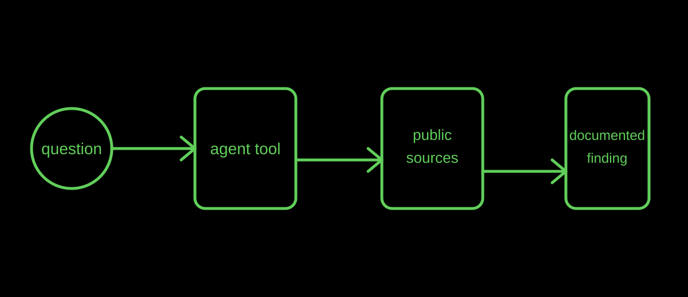

AI search visibility
Open Source GEO Tools: A Practical Map for AI Search Visibility
Open-source GEO tool directories can turn a vague request—“make this site visible to AI search”—into separate technical questions. The useful work starts when those questions become measurable checks rather than a single score.
Published · By the bug breeder

Quick definition
Open-source GEO tools are projects that help inspect or support generative-search visibility. A current directory can include crawler-access checkers, structured-data utilities, llms.txt generators, content-extraction tools, prompt research, and citation-tracking projects.
Use a four-part baseline
First, check access: public pages, accurate status codes, robots.txt, and a sitemap. Next, check comprehension: concise HTML, clear headings, canonical URLs, and structured data where it truthfully describes the page. Then check evidence: sources, authorship, dates, and original material. Finally, measure mentions or citations with a stable prompt set and record the model, location, date, and wording.
Each stage can fail independently. An accessible page can still be unclear. A well-structured page can still lack credible evidence. A citation tracker can show a changing sample, not a causal proof.
Limits
Directory inclusion is not independent validation, and no tool can guarantee a citation. Different models, queries, regions, and dates can produce different answers. Treat results as diagnostic evidence that helps prioritise improvements.